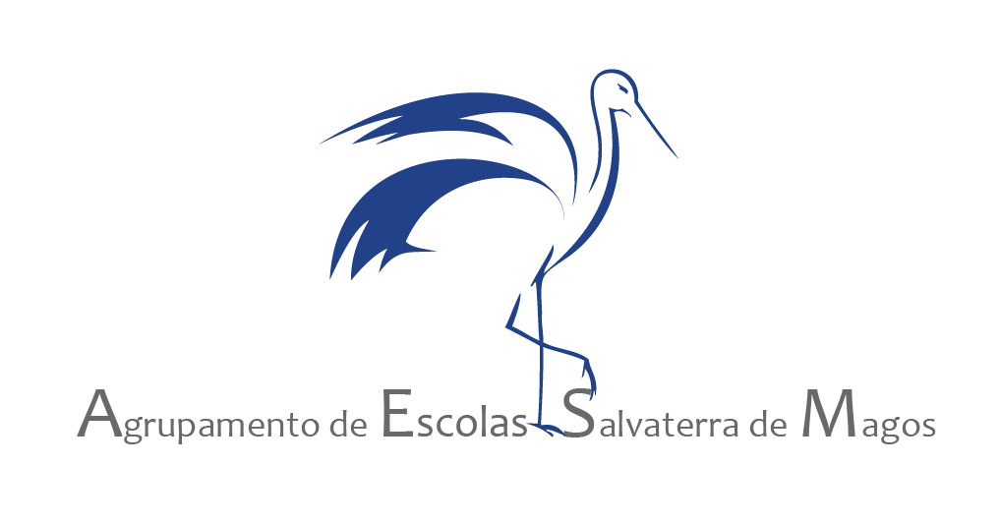
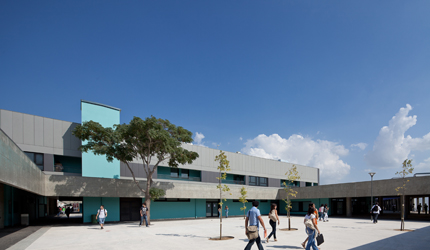
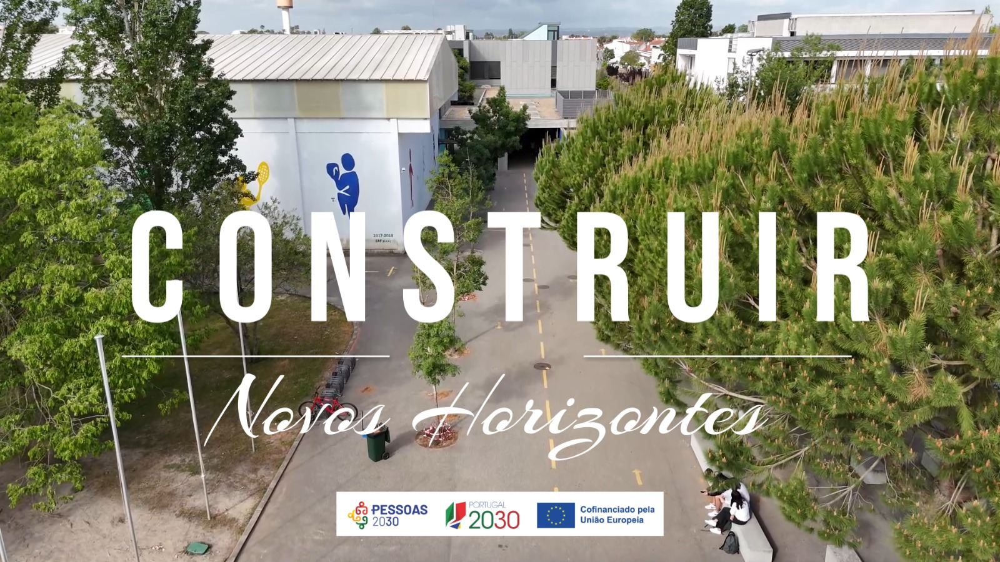

.png)

O Agrupamento de Escolas de Salvaterra de Magos (AESM) foi criado por Despacho da tutela no ano de 2008, aglutinando o Agrupamento já existente com a Escola Básica e Secundária de Salvaterra de Magos. O AESM reúne todos os níveis de ensino, desde o pré-escolar ao ensino secundário, com uma oferta educativa diversificada, quer no que respeita a cursos do ensino secundário de caráter geral quer profissionais. As ofertas educativas do AESM, passam ainda pelos cursos de Educação e Formação de Adultos (EFA) que dão resposta às necessidades de formação de um elevado número de pessoas da comunidade, quer pelas exigências do mercado de trabalho, bem como por motivos relacionados com a valorização pessoal.
Escola básica e secundária de salvaterra de magos |
Escola Secundária e Básica de Salvaterra De Magos |
26/27 |
|---|
O Agrupamento de Escolas de Salvaterra de Magos (AESM) foi criado por Despacho da tutela no ano de 2008,
aglutinando o Agrupamento já existente com a Escola Básica e Secundária de Salvaterra de Magos. O AESM reúne
todos os níveis de ensino, desde o pré-escolar ao ensino secundário, com uma oferta educativa diversificada,
quer no que respeita a cursos do ensino secundário de caráter geral quer profissionais. As ofertas educativas
do AESM, passam ainda pelos cursos de Educação e Formação de Adultos (EFA) que dão resposta às necessidades de
formação de um elevado número de pessoas da comunidade, quer pelas exigências do mercado de trabalho, bem como
por motivos relacionados com a valorização pessoal.
| O AESM tem por missão prestar um serviço público de educação de qualidade, contribuindo para a formação de cidadãos críticos e conscientes dos seus deveres e direitos, com competências e saberes orientados para a resolução dos desafios do século XXI, no respeito e cumprimento dos valores humanistas, culturais, sociais e ambientais |
 |
Visão |
valores |
|---|---|
| Ser uma Escola comprometida e reconhecida, pela qualidade do serviço educativo prestado, pelo sucesso académico e profissional dos seus alunos, pela excelência do seu ambiente interno e relações externas e pelo grau de satisfação das famílias. |
O AESM exerce a sua ação alicerçar-se nos seguintes valores: Equidade Melhorar a eficiência do serviço prestado, da oferta educativa e do sucesso escolar. Cidadania e participação Promover o desenvolvimento integral dos alunos, no sentido de se tornarem cidadãos respeitadores da diversidade humana e cultural e atuar de acordo com os princípios dos direitos humanos. Fomentar nos alunos comportamentos de solidariedade e sustentabilidade ecológica, tornando-os interventivos, autónomos e empreendedores. Excelência e exigência Garantir a igualdade de oportunidades. Responsabilidade e integridade Respeitar-se a si mesmo e aos outros, saber agir eticamente e ser consciente da obrigação de responder pelas próprias ações. Inovação Melhoria das metodologias de ensino, da qualidade das aprendizagens e do desenvolvimento profissional. Liberdade Manifestar a autonomia pessoal centrada nos direitos humanos, na democracia, na cidadania, na equidade, no respeito mútuo, na livre escolha e no bem comum. |
